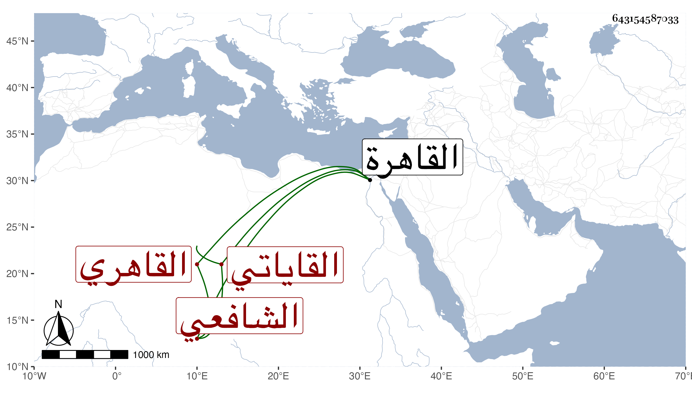

0902Sakhawi.DawLamic.ITO20230111-ara1.EIS1600.643154587033
Biography ID: 643154587033
435
أحمد بن علي بن يعقوب الشهاب بن الشمس القاياتي الأصل القاهري الشافعي بن القاياتي . ولد تقريبا في سنة ست وعشرين وثمانمائة بالقاهرة ونشأ بها في كنف أبيه فحفظ القرآن وتنقيح اللباب لابن العراقي ، وعرض على شيخنا والونائي وغيرهما وحضر ختانه وختان أخيه في يوم واحد البرهان الأدكاوي ، واشتغل يسيرا على جماعة والده فقرأ على الزين طاهر والوروري ويحيى العلمي في العربية وعلى ثانيهم خاصة في الصرف وعلى ثالثهم في الأصول على ابن حسان في الفقه وعلى أبي الجود في الفرائض ولم ينجب ولا كاد وسمع صحيح مسلم على الزركشي وكذا سمع على ابن الطحان وابن بردس وابن ناظر لصاحبة وشيخنا في آخرين ولما مات أبوه اشترك مع أخيه في وظائفه ودرس في الحديث بالبرقوقية وكذا درس بغيرها واختص بمشيخة البيبرسية وكان شيخنا استرجعها بعد موت والده فاقتلعها الظاهر جقمق منه لهذا وتألم شيخنا أشد من تألمه بأخذ والده لها وامتحن هو وأخوه على يد تمر الوالي وطيف بهما على هيئة غير مرضية وغضب الأمين الأقصرائي لذلك وامتنع من حضور الأشرفية في ذاك اليوم وشافه الأمشاطي الأمير بما ينفعه عند الله لكونه انتصارا لبني العلماء في الجملة وإلا فقد قال البقاعي في ترجمة أبيه وإن كان فيه شائبة غرض ما نصه : وبالغ أولاده في الرقاعة والجلوس فوق الأكابر من الأمراء وغيرهم في المحافل مع ارتكاب الفواحش والانهماك في المساوئ والنشأة الدنية في سن الطفولية والسيرة القبيحة على قرب العهد قال وانضم إليه ولي الدين أحمد بن تقي الدين البلقيني وكان معروفا بالمجاهرة بأنواع الفسق والانقطاع إلى الخلاعة والسخرية والإضحاك للأكابر فزادهم في الفساد وجرأهم على أنواع العناد فكان ذمهم كلمه إجماع انتهى . وقد حج بعد أبيه في موسم سنة ست وخمسين ورجع فأقام منعزلا عن الناس مع مباشرة وظائفه وصار عاقلا متواضعا متوددا لين الجانب إلى أن مات في الأربعاء حادي عشر صفر سنة تسع وسبعين ودفن من يومه بحوش سعيد السعداء جوار والده بعد أن صلي عليه بعد العصر بمصلى باب النصر في مشهد حسن وخلف طفلا وابنتين واستقر بعده أخوه أبو الفتح في البيبرسية ثم بعد يسير مات الطفل ثم إحدى البنتين عفا الله عنه ورحمه وإيانا .
